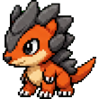

 FireRock
FireRockTap a stage to read its story.
Emberspike is a dark reddish-brown creature with a back covered in short pointed quill-spines and bright clawed paws it uses to scramble confidently across granite faces. Its face is earnest and it holds its head slightly to one side, ears pricked, always listening. When threatened it puffs its spine-quills outward and stamps both front feet simultaneously - a behavior that looks more indignant than frightening but has deterred more than a few larger creatures. Granite-heights children keep Emberspike as a companion because it always shows up at mealtimes with impressive punctuality.
Field note: Emberspike counts its own spines each morning by arching its back and feeling each tip with its nose; it has never miscount.
Granite Heights. Emberspike and its family are found in the Granite Heights. See everyone who lives there.
Share a Bond Food that matches its types to become friends. Emberspike loves:
A Bond Food is not a trick. It joins your spirit with the Kimuro's spirit, and only when it chooses you.
Print the Kimuro adventure packs: mazes, cards, a board game and Bond Mark medals.
See the printable packs